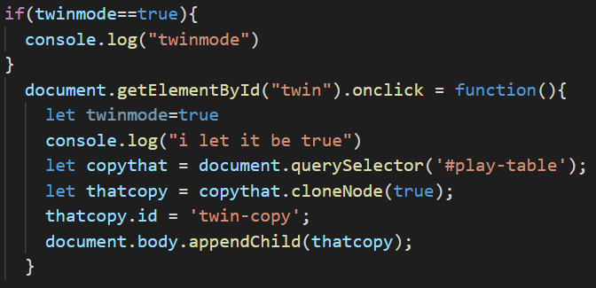

Welcome to DUH Workout?! Version 1.1 (NOW with __% more Deuce, "graphics" and functional timer!:!? !) email: tippi@boober.org
we now each have the workout cards: press this button (how many times?!?) to shuffle them all onto the "table"
each player chooseschooseschooses one workout; choose well, in your mind
you can click to flip the card, your first goal is to do one workout and flip it to mark it done!!
step by step; you can be Da Deuce(r) !
FIRST Player: just do each card and flip iteliminate the impossible, flip to mark your progress, and then answer their question, truthfullyafter you've guessed who they are, wait your turn and begin using your attacks>
email tippi@boober.org subject:[your username, whatever you want less than 16 letters or numbers]
and the keywordswords"review dadeuce v1.6" and tell me of your woes username, keyword review 1.6/1.7 and your woes (specific or general) to tippi@boober.org for early registration
have fun!

you found the quiz!
eventually, the hidden function will make it appear, but for now consider this a minor victory
questions to think about after your first play. after thinking, please write or speak your answers in an email
by now, you must know the current email for dadeuce is tippi@boober.org
if you wanted to play this with a friend, what would you tell them to get them interested but not ruin the surprises? what version did you just play? What was it like? any tips? imagine this concept transformed into or merged with a "online dating app" (ODA). What does it look like? What are the Do's and Don'ts? how about as a tool for leaders to learn about or even organize HR or Current Issues?what about as a pitch deck creator, or a game to help gamers learn new games (lol noobs)which features do you wish to see in future versions? do you have any surprising uses for this?some of those quiz questions can be treated as rhetorical, as with everything, its your choice how and how much to respond